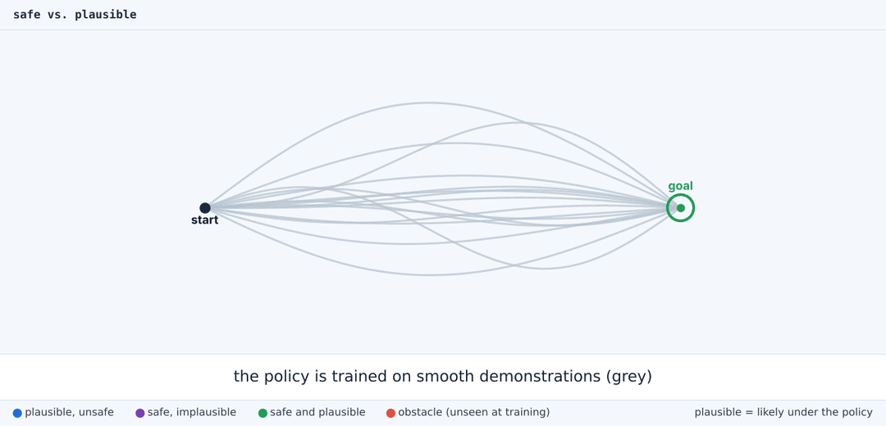
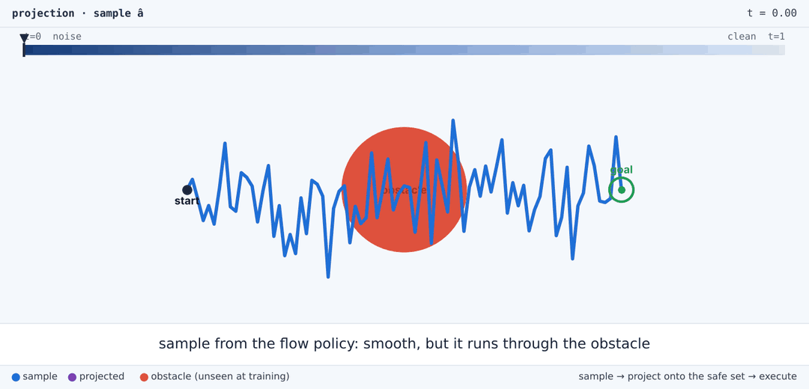
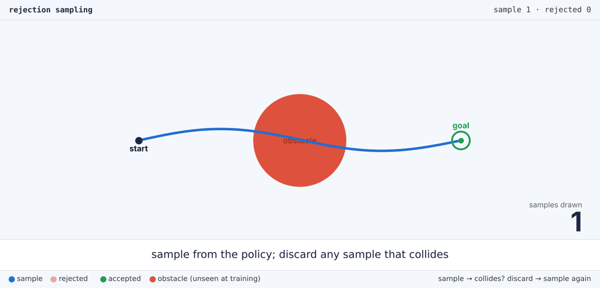
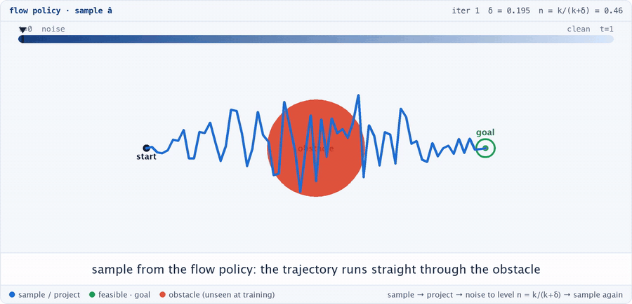

Overview
Safe isn't enough: the action must also be plausible
No training set anticipates every deployment. A policy that opens drawers will eventually meet a wine glass left beside the drawer, which the arm must not touch. That requirement is a constraint, supplied only at deployment, and it defines a safe set: every action that does not touch the glass. The four animations below walk through the problem on a 2D toy policy.
Safe and plausible
We want actions that are both safe, satisfying the constraint, and plausible, remaining likely under the policy. An action the policy would rarely sample may clear the obstacle yet no longer reach the goal, and it loses the smooth motion learned from demonstrations.

Why projection and guidance fail
Projection moves the action to the nearest safe one, which the policy would rarely sample: it bends sharply around the obstacle. Gradient guidance evaluates its cost on an average of the actions the policy might still produce. It is unreliable when the policy is multimodal or the cost changes sharply, and here it clears the obstacle but is carried past the goal.

Rejection: plausible, but slow
Rejection sampling meets both requirements: sample the policy again and again, and keep the first sample that is safe. Every output is plausible, but the wait is intractable when safe actions are rare. Here 47 of 48 samples are wasted.

CS-Pi: rejection sampling that knows where to look
Projecting a sample gives extra information: how far that sample is from the safe set. CS-Pi uses each projection to bias where it searches next. It adds noise back to the projection, more when the projection moved the sample further, and re-runs the unmodified policy from there. The result: samples like rejection's, at a fraction of its inference cost.
